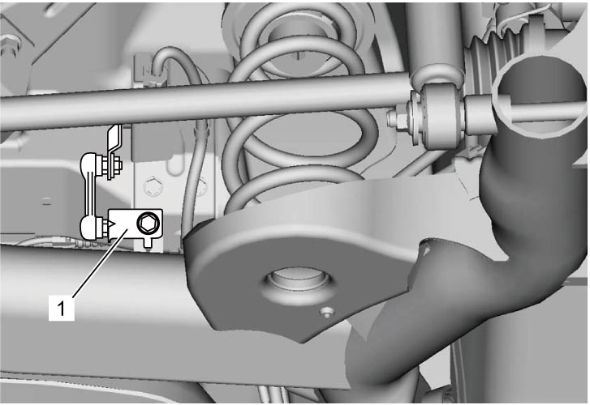

2C
| Rear Coil Spring and Spring Seat Removal and Installation |
Removal
1)Hoist vehicle and remove rear wheels. 
2)Remove vehicle height sensor bracket (1) from rear axle (Discharger headlight model).


 "Expand image")
3)Remove rear drive shaft flange nuts, and detach rear drive shaft assemblies from each flange (4WD model).
4)Support both ends of rear axle (1) using two floor jacks (2) to prevent it from lowering.
 "Expand image")
5)Remove rear shock absorber lower nuts and lower washers.
6)Detach lower ends of right and left rear shock absorbers (1) from rear axle.
7)Lower rear axle gradually if necessary for removing coil spring (2).
NOTICE:
Lowering the rear axle too much may cause damage to the flexible brake hose, wheel speed sensor lead wire and parking brake cable.
Limit the distance that you lower the rear axle to the minimum distance necessary.
8)Remove coil spring(s) (2).
 "Expand image")
9)Remove spring upper seat(s) (1) from vehicle body and spring lower seat(s) (2) from rear axle.
 "Expand image")
Installation
1)Install spring lower seat(s) to rear axle. At this time, fit protrusion (5) of spring lower seat (2) into hole (6) in rear axle.
2)Install spring upper seat(s) (1) to vehicle body.
3)Install coil spring(s) (3). At this time, contact coil spring end (4) with protrusion (7) of spring lower seat.
 "Expand image")
| [A]: | Left side | [r]: | Vehicle rightward |
| [B]: | Right side | [u]: | Vehicle upward |
| [f]: | Vehicle forward |
4)Jack up rear axle and then install shock absorber (1) lower ends to rear axle.
5)Install lower washers and tighten shock absorber lower nuts (2) temporarily by hand.
 "Expand image")
6)Remove floor jack from rear axle.
7)Install rear drive shaft assemblies to each flange (4WD model).
8)Install vehicle height sensor bracket to rear axle (Discharge headlight model).
9)Install rear wheels.
10)Lower hoist and bounce vehicle up and down several times to stabilize suspension.